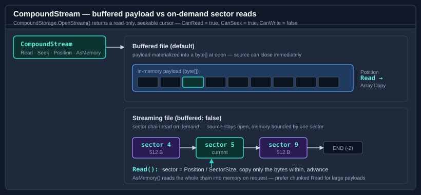

Buffered vs streaming access
CompoundFile can hold a file two ways, chosen by the buffered flag on CompoundFile.Open. The choice affects memory, the source stream's lifetime, and the behaviour of the CompoundStream cursor you open over a stream's bytes. This guide explains both modes and when to pick each.

The two modes
using Bodu.IO.Compound;
// Buffered (default): the whole file is read into memory at open time.
using CompoundFile buffered = CompoundFile.Open(File.OpenRead("book.xls"));
// Streaming: sectors are read on demand from the seekable source.
using FileStream source = File.OpenRead("large.msg");
using CompoundFile streaming = CompoundFile.Open(source, buffered: false);
| Buffered (default) | Streaming (buffered: false) |
|
|---|---|---|
| Source after open | Can be closed immediately. | Must stay open and unmodified for the file's lifetime. |
| Memory | Whole file resident. | Bounded — one sector at a time for large streams. |
| Source requirement | Any readable stream. | Must be seekable (ArgumentException otherwise). |
| Concurrency | Read-only and safe to share across threads. | Reads are serialized against the shared source position — concurrent, but not parallel. |
The default suits the common case — a few-kilobyte .xls or .msg — where reading it all up front is simplest and lets you drop the file handle right away. Reach for streaming when the file is large enough that holding it whole is undesirable and you can keep the source open.
Letting the reader decide — the Auto strategy
The buffered flag is the two-value shorthand; the full control is CompoundReadStrategy on CompoundFileOptions, which adds a third option that picks per source size:
using Bodu.IO.Compound;
var options = new CompoundFileOptions
{
ReadStrategy = CompoundReadStrategy.Auto,
MaxBufferedBytes = 32L * 1024 * 1024, // buffer at/under 32 MiB, stream above it
};
using FileStream source = File.OpenRead(path);
using CompoundFile file = CompoundFile.Open(source, options, leaveOpen: true);
Auto compares a seekable source's length against MaxBufferedBytes (64 MiB by default): small files are buffered, large ones streamed. A non-seekable source can only be buffered, so Auto and Buffered both read it whole, while Streaming over a non-seekable source throws ArgumentException.
Note
Even under a streaming file, a stream whose size is below the mini-stream cutoff (typically 4096 bytes) is materialised whole rather than walked sector by sector — its bytes live in the in-memory mini-stream that the reader builds at open time. Streaming bounds memory for the large streams; the small ones are already resident.
The CompoundStream cursor
CompoundStorage.OpenStream returns a CompoundStream, a standard read-only, seekable Stream — CanRead and CanSeek are true, CanWrite is false. Because it is a Stream, it composes with the BCL surfaces that consume one:
using CompoundStream stream = file.RootStorage.OpenStream("Workbook");
// Hand it to any Stream consumer.
using var reader = new StreamReader(stream, Encoding.Unicode);
string text = reader.ReadToEnd();
// Or seek and read primitives directly.
stream.Seek(0, SeekOrigin.Begin);
Span<byte> header = stackalloc byte[8];
stream.ReadExactly(header);
Under a buffered file the cursor's payload was materialized into a byte[] at open time, and Read / Seek work over that array. Under a streaming file the same cursor instead walks the stream's sector chain in the source: each Read locates the sector for the current Position, copies only the bytes within that sector, and advances — so the full payload is never resident. The two behave identically from the caller's side; only the memory profile differs.
Write and SetLength throw NotSupportedException on this read-only cursor — the one returned by OpenStream(name). On a writable file, OpenStream(name, FileMode, FileAccess) (and CreateStream) instead return a read-write cursor whose CanWrite is true; see Authoring compound files. Seeking past the end is allowed (the Stream contract); the next Read returns zero. The cursor's Stat property exposes the entry's CompoundEntryInfo metadata snapshot, and Length reports the declared payload size.
A single cursor is not safe for concurrent use — its
Positionadvances as you read. Open one cursor per reader.
AsMemory vs chunked Read
using CompoundStream stream = file.RootStorage.OpenStream("Workbook");
// Whole-payload view — convenient for small streams.
ReadOnlyMemory<byte> all = stream.AsMemory();
ushort magic = BinaryPrimitives.ReadUInt16LittleEndian(all.Span);
AsMemory returns a read-only view over the entire payload. For a buffered stream this is a view over the already-materialized bytes with no copy; for a streaming stream it reads the whole chain into memory on request. It does not depend on or advance Position. ReadAllBytes is the copying sibling — it returns a fresh byte[] of the whole payload, mirroring File.ReadAllBytes.
Prefer chunked Read over AsMemory for large streaming payloads — AsMemory defeats the point of streaming by pulling the whole thing into memory:
using CompoundStream stream = file.RootStorage.OpenStream("LargeBlob");
byte[] buffer = ArrayPool<byte>.Shared.Rent(64 * 1024);
try
{
int read;
while ((read = stream.Read(buffer, 0, buffer.Length)) > 0)
sink.Write(buffer.AsSpan(0, read));
}
finally
{
ArrayPool<byte>.Shared.Return(buffer);
}
Large payloads on the write side
A writable cursor (from CreateStream or a write-access OpenStream on a writable file) buffers its whole payload in memory until it flushes into the staging tree, and it caps that buffer at int.MaxValue bytes — growing past the cap throws NotSupportedException rather than exhausting memory by surprise.
For payloads that should not (or cannot) be buffered, author through a deferred stream source instead: CompoundStorageBuilder.AddStream(name, openRead, length) or AddStreamFromFile. Deferred sources declare their length up front, are opened only during serialization, and are copied to the destination through a fixed-size pooled buffer — so the container can carry payloads far larger than memory. See Authoring compound files for the deferred patterns.
Independent of the cursor cap, MS-CFB itself limits any single stream in a version-3 (512-byte-sector) file to 2 GB; larger streams require a version-4 file (CompoundBuildOptions.Version = CompoundFileVersion.V4).
Asynchronous I/O
Two paths do real asynchronous I/O, matched to where the work is actually a device operation rather than a memory copy:
CompoundFile.CommitAsync/FlushAsyncwrite the container to the destination — and copy any deferred stream sources — withWriteAsync/ReadAsync. They share the exact layout computation the synchronousCommituses, so the bytes are identical; cancellation is observed before any write and again between chunks. A cancellation or failure mid-write leaves the destination partially written and the file dirty (the same surface a synchronous fault presents) — commit again, orRevert.CompoundStream.ReadAsyncis truly asynchronous only for a streaming-mode cursor, which reads its sectors on demand from the underlying source. A buffered cursor (the default) and a writable cursor read from memory, so theirReadAsynccompletes synchronously — awaiting them is correct but adds no I/O concurrency.
There is no OpenAsync: opening a buffered file is a single contiguous read the caller can do themselves (open a MemoryStream and pass it), and opening a streaming file does no bulk I/O up front.
Lifetime checklist
- Dispose the
CompoundFilewhen finished; it releases the source according to theleaveOpencontract. - Under streaming, keep the source stream open and do not seek or write it yourself until the
CompoundFileis disposed. - Dispose each
CompoundStreamcursor when done with it. - Reading from a
CompoundStreamafter its owningCompoundFileis disposed throws ObjectDisposedException.
Where to go next
- Reading compound files — opening, navigating, and the
OpenvsReadAllByteschoice. - Reading property sets — the metadata streams.
- Bodu.IO.Compound API reference.